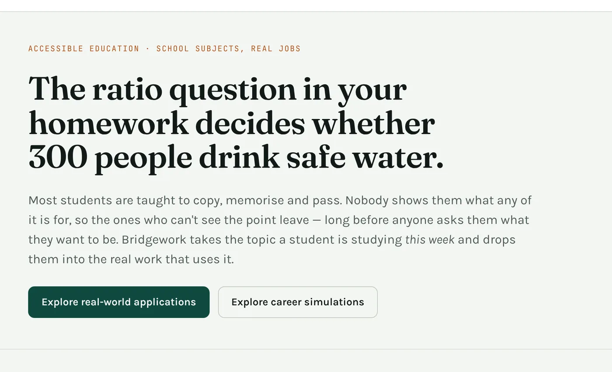
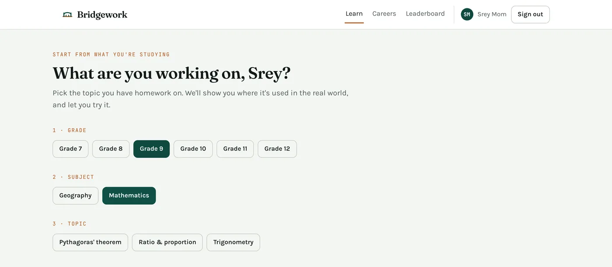
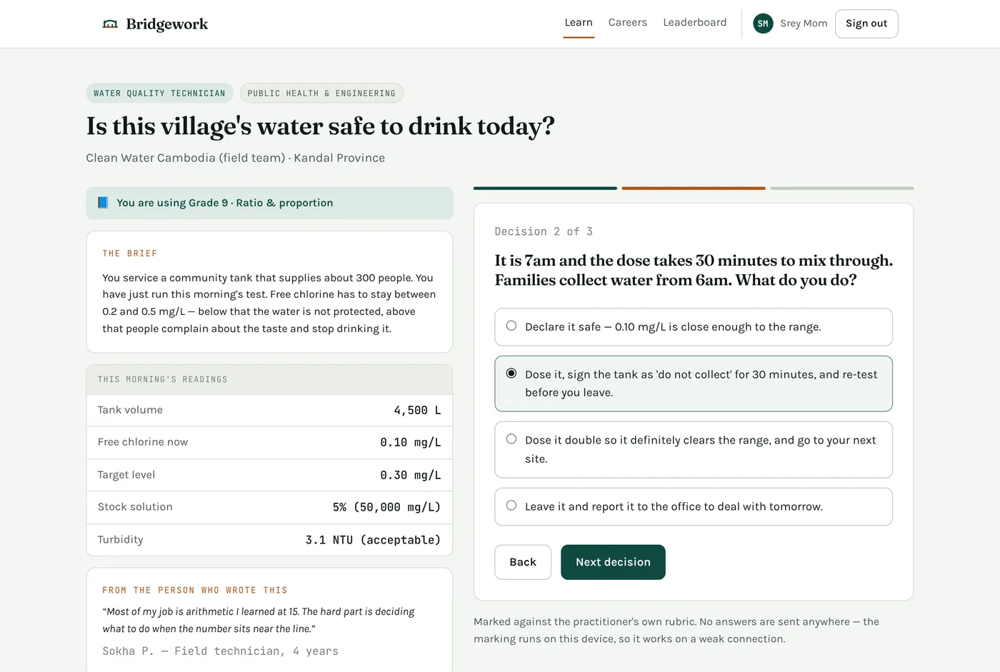
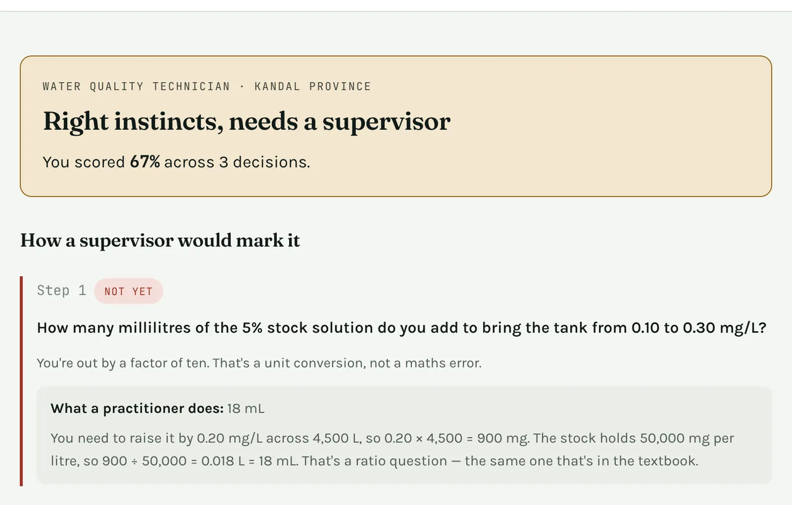
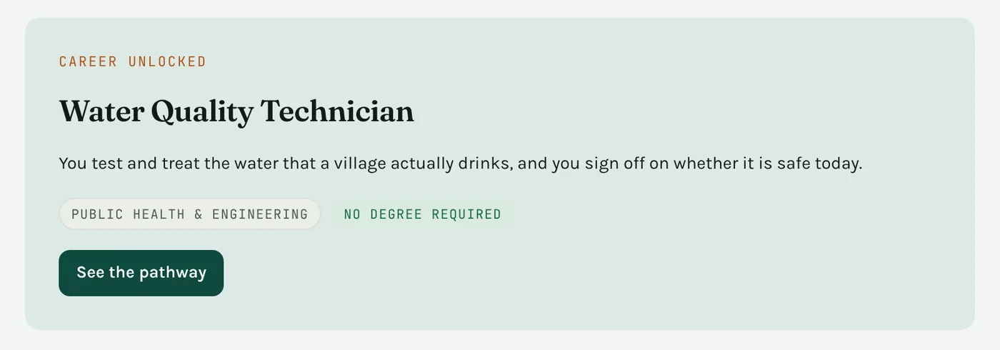
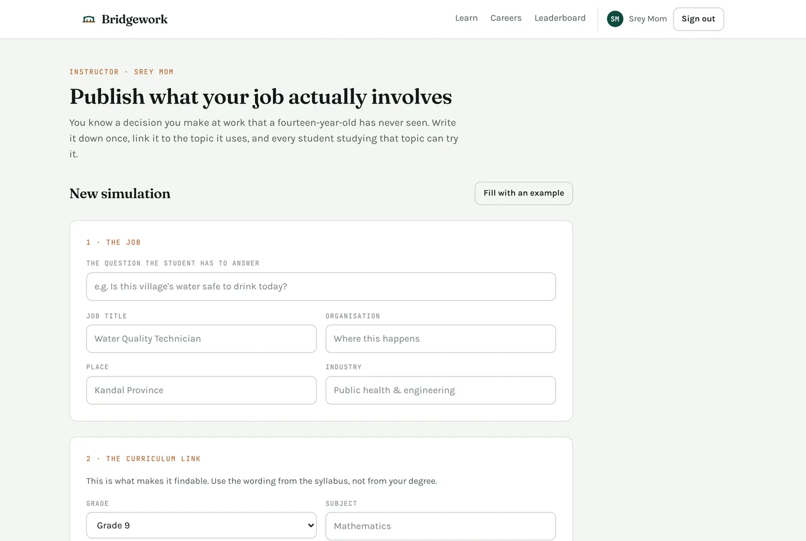

Bridgework
Pick the topic you have homework on. Bridgework drops you into a real job that uses it, marks you like a supervisor, and shows you the career behind it.

The problem
In many classrooms, school is copy, memorise, pass. Nobody shows students what any of it is for.
- Many leave before 18, before anyone asks what they want to do.
- The jobs they can name stop at doctor and teacher.
- Changing a national curriculum takes a ministry and a decade.
I grew up in a province in Cambodia, not Phnom Penh. My siblings are in high school now. I built what I wish I'd had at fifteen. Friends from India described the same classroom, so Cambodia is my worked example, not the only case.
The idea
Bridgework runs alongside the syllabus a school already teaches, so nothing needs approval for a student to use it tomorrow.
- Students pick their grade, subject and topic, then do a short job task built on exactly that topic.
- Practitioners and uni students publish simulations from their own jobs, tagged to the school topic they use.
How it works




How I built it
- Next.js 15 + React 19 on Vercel, with one hand-written stylesheet and light and dark themes.
- No backend. Content is seeded data; progress lives in the browser.
- Marking runs on the device. It spots the common slips, like a factor-of-ten error, and calls it a unit conversion problem. A student on a shared phone with weak signal gets the same feedback as anyone.
- Instructor side: a published simulation appears under its school topic straight away.

Result
Bridgework made the final 8 of 17 projects at Melbourne Hack 2026, and placed in the top 2 of the education stream.
I pitched it at the closing ceremony: 8 minutes with a live demo, then Q&A.